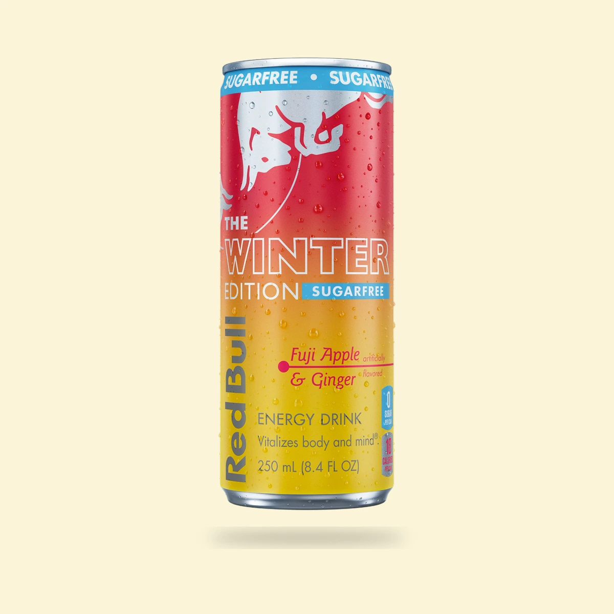

Is Red Bull Blue Edition Blueberry discontinued?
Yes. The original blueberry edition left Red Bull’s U.S. lineup in 2026, although foreign-market cans can still appear online.
The 2026 U.S. Red Bull changes, explained edition by edition so international cans, seasonal stock, and regular-sugar versions do not muddy the answer.
The original Blue Edition Blueberry and Green Edition Curuba Elderflower are discontinued from normal U.S. distribution. Red Bull also ended two specific sugarfree variants: Red Edition Watermelon Sugarfree and Amber Edition Strawberry Apricot Sugarfree. Their regular-sugar counterparts are separate products, so seeing a current red or amber can does not reverse the sugarfree discontinuation.
Fuji Apple & Ginger creates the opposite kind of confusion. The flavor returned permanently in August 2026 as Apple Edition, but Red Bull says the current U.S. product is only offered with sugar. The 2025 Winter Edition Sugarfree was real U.S. inventory, and a Sugarfree Apple Edition remains current in some foreign markets, but neither makes it part of the permanent U.S. lineup.
Red Bull manages its Editions by country. A flavor can still be produced overseas after it disappears from the American range, and imported cans can appear in U.S. search results. This index uses the current United States lineup as its primary market test, then checks specific 2026 reporting and remaining inventory context in each full article.
Yes. The original blueberry edition left Red Bull’s U.S. lineup in 2026, although foreign-market cans can still appear online.

The green curuba-and-elderflower Edition was removed from normal U.S. distribution in the 2026 range reset.

The sugarfree watermelon variant ended in the U.S.; the regular Red Edition is a separate current drink.

The sugarfree Amber Edition was cut in 2026 even though regular Strawberry Apricot remains in Red Bull’s U.S. range.

Fuji Apple & Ginger is back permanently as Apple Edition, but the U.S. Sugarfree can from winter 2025 did not return with it.
Discontinued Club checks official U.S. product catalogs first, then looks for dated brand statements, distributor notices, retailer resets, and broad changes in availability. A single empty shelf, a marketplace listing, or an old product page is not enough by itself.
International production is still useful context. It can explain why a flavor appears in search results or can be imported after American distribution ends. For this index, however, a product that is no longer sold through normal U.S. channels is treated as discontinued in the United States.
Remaining inventory does not reverse a discontinuation. Retailers and collectors can sell sealed stock long after a product leaves production. Product pages linked from these reports show the exact item offered by Discontinued Club rather than a generic replacement photo.
Yes in the United States. Current foreign-market Blueberry cans do not make it a current U.S. product.
Yes in normal U.S. distribution. Remaining U.S. cans and imported stock can still be sold after the range change.
The 2026 reports here concern the Sugarfree Watermelon and Sugarfree Strawberry Apricot variants. Regular-sugar Editions are separate products and must be checked independently.
No. The flavor returned permanently in the United States as Apple Edition on August 31, 2026. The U.S. Sugarfree version from the 2025 Winter Edition did not return with it.